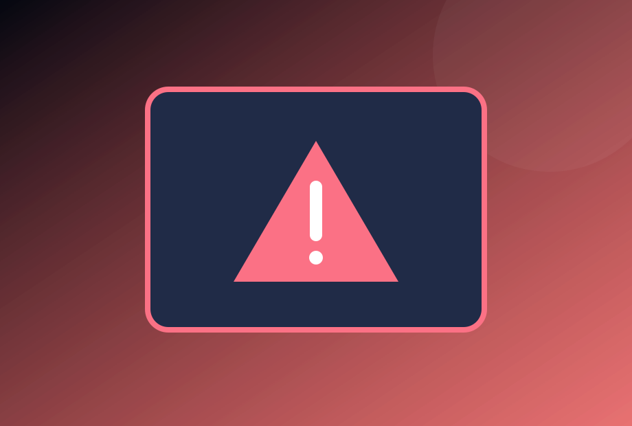
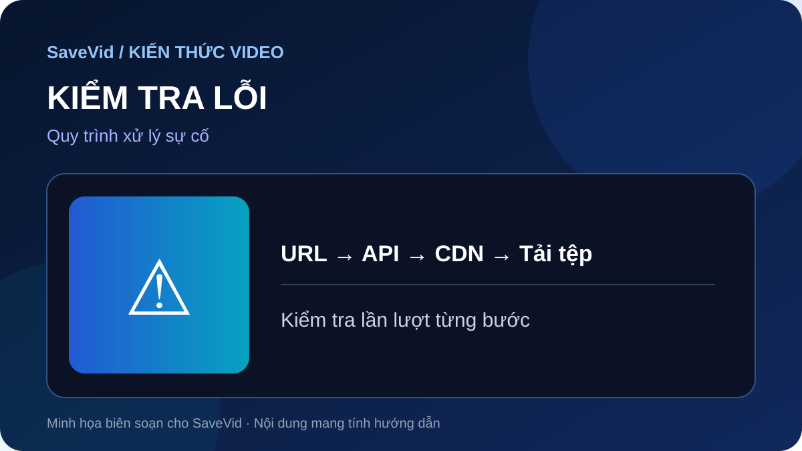
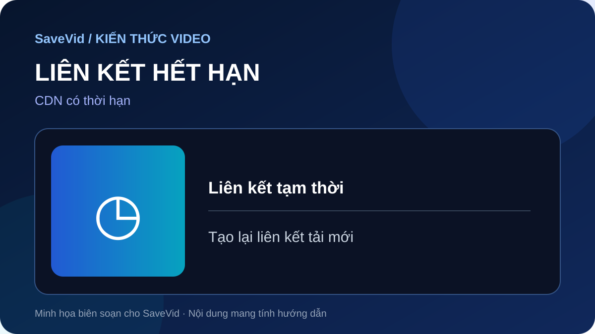
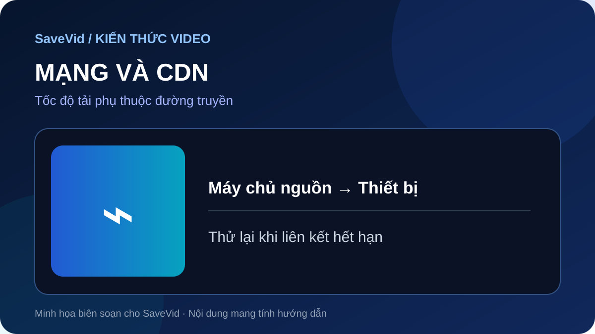

Vì sao liên kết video không tải được?

SaveVid tổng hợp hướng dẫn thực hành giúp bạn hiểu rõ cách sử dụng công cụ video trực tuyến và lựa chọn định dạng phù hợp.

Liên kết không đúng định dạng
Hãy chắc chắn liên kết bắt đầu bằng https:// và trỏ tới video thuộc nền tảng được hỗ trợ. Một số liên kết chia sẻ có thêm văn bản; công cụ cần tách đúng URL trước khi gửi đến API.

Nội dung bị giới hạn
Video riêng tư, đã xóa, giới hạn khu vực hoặc cần đăng nhập có thể không truy xuất được. SaveVid không bảo đảm vượt qua cơ chế kiểm soát quyền truy cập của nền tảng.

Liên kết CDN đã hết hạn
Nhiều nhà cung cấp trả về URL tải có chữ ký và thời hạn sử dụng ngắn. Nếu bạn để kết quả quá lâu rồi mới nhấn tải, hãy trích xuất lại để nhận liên kết mới.
API hoặc mạng gặp sự cố
Dịch vụ bên thứ ba có thể giới hạn lượt gọi, thay đổi cấu trúc JSON hoặc trả về lỗi tạm thời. Nếu lỗi chỉ xảy ra trên một nền tảng, kiểm tra Worker và nhật ký API; nếu xảy ra trên tất cả nền tảng, kiểm tra kết nối và cấu hình chung.
Báo lỗi hữu ích
Khi gửi lỗi tới savevid.cloud@gmail.com, hãy cho biết nền tảng, thời điểm, thông báo lỗi và trình duyệt. Không gửi mật khẩu, cookie phiên hoặc token truy cập cá nhân.
Lưu ý: Chức năng tải phụ thuộc nền tảng, quyền truy cập và dịch vụ API. Hãy tôn trọng bản quyền của chủ sở hữu nội dung.